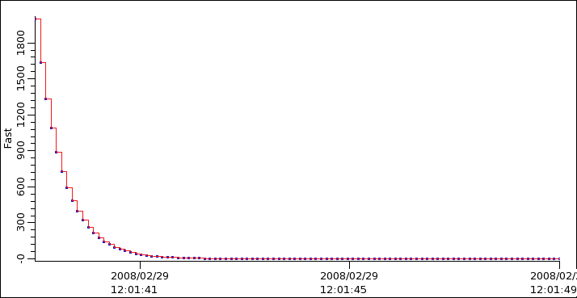
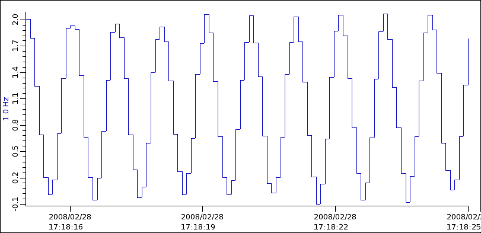

Post Analyzer
Dies Tool kann Zeitreihen-Daten, z.B. Daten aus dem Data-Browser, auf verschiedene Arten analysieren.
Add Data
Holen von Daten in den Data-Browser-Plot, dann
öffnen des Data-Browser-Config-View
und benutzen des Kontextmenus des ausgewählten
Data-Browser-PVs oder Formel-Items, um die
Daten zum Postanalyser zu schicken.
Algorithms
Im Folgenden werden die verfügbaren Algorithmen beschrieben.
Original Data
Dieser Algrrithmus stellt einfach die Originaldaten des ausgewählten Kanals dar.

Crop
Der "crop"-Befehl löscht alle Messdaten, die vor oder hinter dem
sichtbaren Bereich der Zeitachse des Plot-Fensters liegen.
Dies kann benutzt werden, um den Algorithmus auf Teilmengen der
Original-Daten zu beschränken.
Baseline Removal
Der "Baseline"-Befehl verschiebt das untere Ende der (vertikalen) Y-Achse
in den Daten-Nullpunkt, d.h. er zieht den Wert des unteren Y-Achsenabschnitts
von allen Messwerten ab.
Line Fit
Ausführen eines Line-Fits auf die Daten. Die Steigung der Linie widerspiegelt
die Änderung des Signals innerhalb einer Sekunde.
Exponential Fit
Versucht, die Daten an einen exponentiellen Anstieg oder Abfall zu fitten.

Man beachte, dass dies nur funktioniert, wenn das Signal
sich wirklich wie eine exponentielle Funktion
ampl * exp(-x/decay) verhält.
Wenn das Signal einen konstanten Offset
baseline + ampl * exp(-x/decay) enthält,
geht der Fit schief.
Manchmal kann man diesen Baseline-Offset beseitigen, indem
man so zoomt, dass das untere Ende der Y-Achse unter
dieser Baseline ist und dann den "Baseline" removal button
benutzt.
Gaussian Fit
Versucht, die Daten an eine Gauss-Verteilung zu fitten.
Correlation
Korreliert zwei verschiedene Kanäle, benutzt den einen für
die X-Achse und den anderen für die Y-Achse.
Wenn beide Kanäle gleich oder sehr ähnlich sind, ist das Ergebnis eine
diagonale Linie.
FFT
Berechnet die Fourier-Transformation, d.h. das Frequenzspektrum des Signals.
Die Daten im ursprünglichen "Original Data"-Beispiel repräsentierten eine Röhre,
die sich alle 4 Minuten einmal dreht, d.h. alle 240 Sekunden bzw. 1/240=0.004 Hz.
Die FFT zeigt diese 0.004 Hz-Komponente zusätzlich zu der normalen großen DC-Komponente
bei 0 Hz und einigen anderen Komponenten.

Aliasing, Nyquist Limit
Das obere FFT-Spektrum-Limit liegt bei der sog. Nyquist-Frequenz.
Wenn Daten-Punkte alle T Sekunden gegeben sind, ist die Nyquist-Frequenz 1/(2T) Hz.
Wenn man jede 0.1 Sekunden sampelt, d.h mit 10 Hz., dann beinhaltet die FFT Komponenten
bis zu 5 Hz. ...

... wie man in der FFT-Ansicht sieht:
 A 6 Hz signal, however, cannot be properly detected in such an undersampled
setup. The FFT will show an alias 4 Hz component instead of the true
6 Hz frequency.
A 6 Hz signal, however, cannot be properly detected in such an undersampled
setup. The FFT will show an alias 4 Hz component instead of the true
6 Hz frequency.

Window Filters
Die Sample-Frequenz bestimmt as obere Limit des FFT-Spektrums und die
Gesamtanzahl von Samples bestimmt die Granularität der FFT.
Häufig liegen die interessierenden Frequenzen zwischen
Spektrum-Punkten, für die die FFT berechnet wird.
Durch Benutzung eines Fenster-Filters für die Original-Daten können
solche Probleme vermindert werden.
See detailed FFT description.